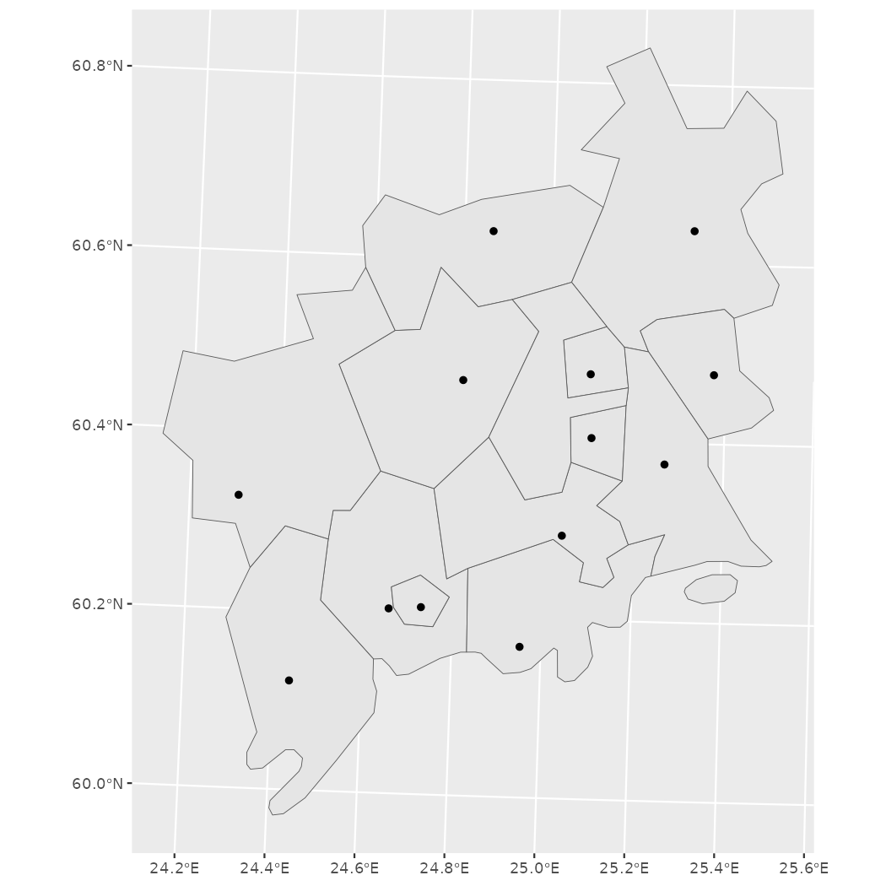
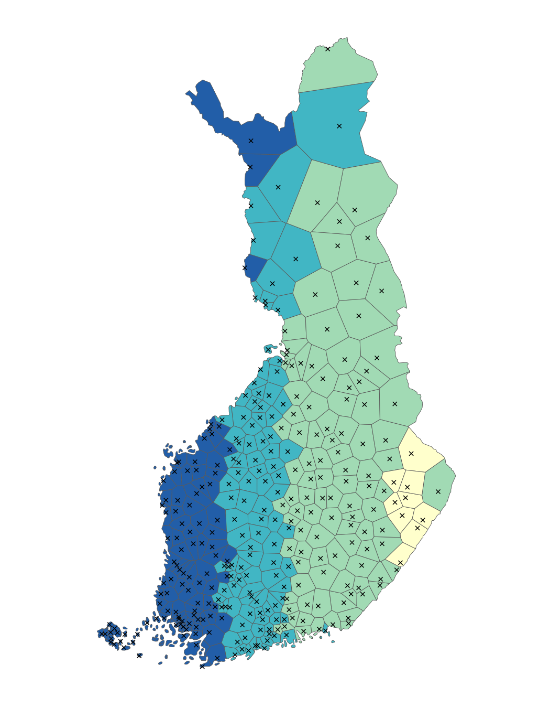

Spatial data manipulation and analysis R and geofi-package
Markus Kainu
2021-12-09
Source:vignettes/geofi_spatial_analysis.Rmd
geofi_spatial_analysis.RmdInstallation
geofi can be installed from CRAN using
# install from CRAN
install.packages("geofi")
# Install development version from GitHub
remotes::install_github("ropengov/geofi")
# Let's first create a function that checks if the suggested
# packages are available
check_namespaces <- function(pkgs){
return(all(unlist(sapply(pkgs, requireNamespace,quietly = TRUE))))
}Manuel Gimonds Intro to GIS and Spatial Analysis and especially it’s appendixes provide a good introduction to working with spatial data in R.
Coordinate reference systems
From the book above, have a look at chapter Coordinate Systems in R first.
When using spatial data in R it necessary to have all data in same coordinate reference system (CRS). You can check the CRS of you sf-object with sf::st_crs()-function. All the data you can obtain using geofi is transformed automatically into EPSG:3067. Most of spatial data providers in Finland provide their data in the same CRS.
library(geofi)
library(sf)
library(dplyr)
muni <- get_municipalities()
point <- municipality_central_localities
crs <- st_crs(muni)
crs$input
#> [1] "EPSG:3067"However, sometimes data is not correctly projected and you have to reproject it using st_transform. Web maps like Google maps or Leaflet use WGS 1984 geographic (long/lat) coordinate system which is fine with added interactive feature, but should be avoided when plotting data on maps elsewhere. This is especially the case with large northern countries like Finland. To demonstrate the effect lets reproject the municipality data to WGS 1984 (usin EPSG code equivalent 4326) and plot it side to side with EPSG:3067
muni_4326 <- st_transform(muni, "EPSG:4326")
crs <- st_crs(muni_4326)
crs$input
#> [1] "EPSG:4326"
libs <- c("ggplot2","patchwork")
if (check_namespaces(pkgs = libs)) {
library(ggplot2)
p1 <- ggplot(muni %>% st_union()) +
geom_sf() +
labs(subtitle = "EPSG:3067")
p2 <- ggplot(muni_4326 %>% st_union()) +
geom_sf() +
labs(subtitle = "EPSG:4326")
library(patchwork)
wrap_plots(list(p1,p2), nrow = 1) +
plot_annotation(title = "Map of Finland in two different CRS")
} else {
message("One or more of the following packages is not available: ",
paste(libs, collapse = ", "))
}
You can see the that northern Finland is larger on the right and the grid below is different.
Area
To compute the area of polygons (municipality in this case), ordering them by size and plotting largest/smalles 10 can be as this.
libs <- c("ggplot2")
if (check_namespaces(pkgs = libs)) {
# compute area
muni$area <- sf::st_area(muni)
# largest
muni %>%
arrange(desc(area)) %>%
slice(1:10) %>%
ggplot() +
geom_sf() +
geom_sf_label(aes(label = name_fi)) +
labs(title = "largest 10")
# smallest
muni %>%
arrange(area) %>%
slice(1:10) %>%
ggplot() +
geom_sf() +
geom_sf_label(aes(label = name_fi)) +
labs(title = "smallest 10")
} else {
message("One or more of the following packages is not available: ",
paste(libs, collapse = ", "))
}
Subsetting
You can subset data your plotting by subsetting your data in conventional filtering codes/names, or you can use geometric operations such as bounding box or intersection.
Lets imagine that we need a more detailed view of the metropolitan area of the Greater Helsinki that consist of the following municipalities: Espoo, Helsinki, Vantaa, Hyvinkää, Järvenpää, Kauniainen, Kerava, Kirkkonummi, Mäntsälä, Nurmijärvi, Pornainen, Sipoo, Tuusula and Vihti. You can subset the data just using the names of municipalities.
greater_helsinki <- c('Espoo','Helsinki','Vantaa','Hyvinkää',
'Järvenpää','Kauniainen','Kerava','Kirkkonummi',
'Mäntsälä','Nurmijärvi','Pornainen','Sipoo','Tuusula','Vihti')
greater_helsinki_polygon <- muni %>% filter(municipality_name_fi %in% greater_helsinki)
if (check_namespaces(pkgs = libs)) {
ggplot(greater_helsinki_polygon) +
geom_sf() +
geom_sf(data = point %>%
filter(teksti %in% toupper(greater_helsinki)))
} else {
message("One or more of the following packages is not available: ",
paste(libs, collapse = ", "))
}
Subsetting using bounding boxes
First, let’s create bounding box from greater Helsinki polygons.
bounding_box_polygon <- st_as_sfc(st_bbox(muni %>% filter(municipality_name_fi %in% greater_helsinki)))
if (check_namespaces(pkgs = libs)) {
ggplot(st_intersection(bounding_box_polygon, muni)) +
geom_sf() +
geom_sf(data = point %>% filter(teksti %in% toupper(greater_helsinki)))
} else {
message("One or more of the following packages is not available: ",
paste(libs, collapse = ", "))
}
Then, let’s use the point data (municipality central localities) to create the bounding box
bounding_box_point <- st_as_sfc(st_bbox(point %>% filter(teksti %in% toupper(greater_helsinki))))
if (check_namespaces(pkgs = libs)) {
ggplot(st_intersection(bounding_box_point, muni)) +
geom_sf() +
geom_sf(data = point %>% filter(teksti %in% toupper(greater_helsinki)))
} else {
message("One or more of the following packages is not available: ",
paste(libs, collapse = ", "))
}Subsetting neigbours
Neighboring or intersecting objects can be found using st_intersection() in following manner where we plot Helsinki and it’s neighbors.
helsinki <- muni %>% filter(municipality_name_fi == "Helsinki")
neigbour_codes <- st_intersection(muni,helsinki) %>%
pull(municipality_code)
if (check_namespaces(pkgs = libs)) {
ggplot(muni %>% filter(municipality_code %in% neigbour_codes)) +
geom_sf() +
geom_sf_label(aes(label = municipality_name_fi))
} else {
message("One or more of the following packages is not available: ",
paste(libs, collapse = ", "))
}
Dissolving polygons (Union)
Often there is need to create alternative regional breakdown to existing ones and aggregating data accordingly. First we need to subset the required members and then dissolve them using st_union(). Below we classify municipalities in three equal size categories based on area, dissolve them and plot.
Lets first plot the smallest category as a single multipolygon.
muni$area_class <- cut_number(x = as.numeric(muni$area), n = 3)
#
#
if (check_namespaces(pkgs = libs)) {
muni %>%
filter(area_class == levels(muni$area_class)[1]) %>%
st_union() %>%
ggplot() +
geom_sf()
} else {
message("One or more of the following packages is not available: ",
paste(libs, collapse = ", "))
}
To union all three into same data you can use group_by and summarise
Centroids, buffers, grids and voronois
The following operarions derive from Marko Kallio’s course at CSC in February 2020 Spatial data analysis with R.
Polygon centroids
geofi contains data on municipality central locations (geofi::municipality_central_localities). Instead of those you may need the actual geographical centers ie. centroids of a polygon that can be computed using st_centroid and plotted with ggplot.
muni_centroids <- st_centroid(muni)
if (check_namespaces(pkgs = libs)) {
ggplot() +
geom_sf(data = muni) +
geom_sf(data = muni_centroids, color = "blue") +
# plot also the municipality_central_localities
geom_sf(data = municipality_central_localities, color = "red")
} else {
message("One or more of the following packages is not available: ",
paste(libs, collapse = ", "))
}
Buffers
Buffers can be useful, for instance, calculating the share of buildings that are within certain radius from central localities. That example is not explained here, but we only show how to create 15km radius around polygon centroids.
muni_centroids_buffer <- muni_centroids %>%
st_buffer(dist = 15000)
if (check_namespaces(pkgs = libs)) {
ggplot() +
geom_sf(data = muni) +
geom_sf(data = muni_centroids_buffer) +
geom_sf(data = muni_centroids, shape = 3)
} else {
message("One or more of the following packages is not available: ",
paste(libs, collapse = ", "))
}
Creating regular grids
You can download predefined grids from Statistics Finland using get_statistical_grid and get_population_grid() -functions in geofi-package. These data contains not just the geographical shape, but also attribute data on population etc. within the grid cells.
However, you may need to create your own custom grid, for instance to aggregate your own point data, which can be created with st_make_grid() function.
As describes by Marko Kallio in Spatial data analysis with R.
It creates a regular grid over bounding box of an ‘sf’ object. Can be given a certain cell size, or number of cells in x and y directions. ‘what’ tells the function what kind of regular grid is wanted (polygons, corners, centers). Fishnets of lines rather than polygons can be created simply by casting the polygons as “LINESTRING”s. The resulting polygon grid is an ‘sfc’ object, so it needs to be made ‘sf’ in order for us to add the ID-attribute.
For this example we pick northern Muonio municipality and create a custom 2km*4km grid on top of it. Afterward we could aggregate the number of reindeer for each grid cell if we would have the data.
muonio <- muni %>% filter(municipality_name_fi == "Muonio")
grid_sf <- st_make_grid(muonio, cellsize = c(2000,4000), what="polygons") %>%
st_sf()
grid_clip <- st_intersection(grid_sf, muonio)
grid_clip$rank <- 1:nrow(grid_clip)
if (check_namespaces(pkgs = libs)) {
ggplot(grid_clip) +
geom_sf(aes(fill = rank), color = alpha("white", 1/3), size = 3) +
scale_fill_viridis_c() +
theme_minimal()
} else {
message("One or more of the following packages is not available: ",
paste(libs, collapse = ", "))
}
Voronoi polygons
In mathematics, a Voronoi diagram is a partition of a plane into regions close to each of a given set of objects. Source: Wikipedia: Voronoi diagram
Perhaps not the most useful operation, but worth taking a look as readily available in sf as function st_voronoi. In this case, it creates a layer of polygons that are closest to each municipality central locality.
library(geofi)
library(sf)
muni_voronoi <- municipality_central_localities %>%
st_union() %>%
st_voronoi() %>%
st_cast() %>%
st_sf() %>%
st_intersection(st_union(muni)) %>%
mutate(rnk = 1:nrow(.))
if (check_namespaces(pkgs = libs)) {
ggplot(muni_voronoi) +
geom_sf(aes(fill = rnk)) +
geom_sf(data = municipality_central_localities, shape = 4) +
scale_fill_fermenter(palette = "YlGnBu") +
theme_minimal() +
theme(axis.text = element_blank(),
axis.title = element_blank(),
panel.grid = element_blank(),
legend.position = "none")
} else {
message("One or more of the following packages is not available: ",
paste(libs, collapse = ", "))
}